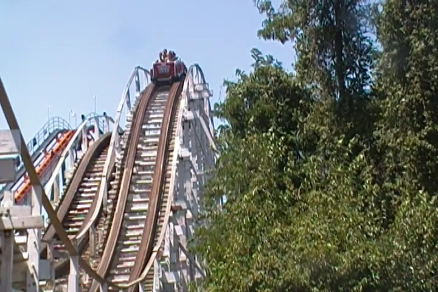
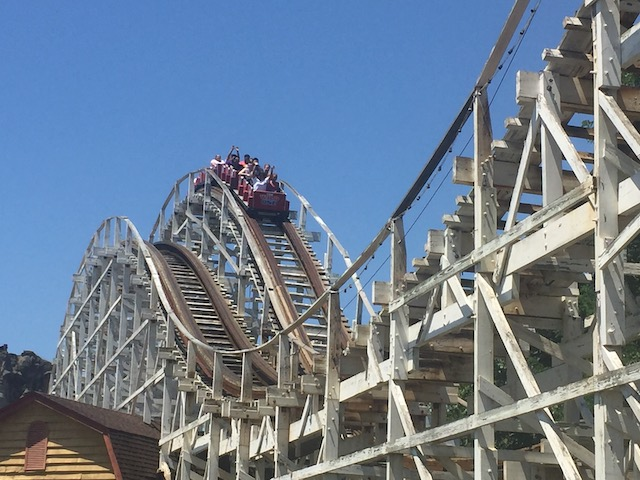

| |
Wild One Review

We're here at Six Flags America where we're going to be reviewing the parks more classic wooden coaster, Wild One. Now this ride goes WAY back. It opened at some place called Paragon Park in MA back in 1917. Over 100 years before I officailly rode it in its new home. But yeah. Paragon Park closed down, and Wild One was decided to be saved by Six Flags America, and that's how this coaster is stilling thrilling people 100 years after it was built. Yeah, it may not get the same sort of historical clout that other old coasters, such as the Coney Island Cyclone, the Giant Dipper, or if you wanna go international, Rutschebanen get. But it's still a fun ride. All right. Let's hop in the trains (this ride uses modern PTC Trains), pull down the lap bars, and we're off! We roll through some straight track, around a turn, and begin to climb up the lifthill. Looking around from here, we see pretty much all of Six Flags America and get a really nice view of the park. But of course, we reach the top, and then head down the first drop. It curves a little, so there's a little bit of laterals. But for the most part, its just a straight drop. And it gives us a decent amount of speed, which is good. We then head through an airtime hill. Nothing big or special, but there's some airtime. And that's always a good thing. Yeah, there's a little bit of jackhammering, but it's no big deal. We then rise up into a double up. This may look amazing, but sadly, there's no airtime to be had here. And we lose all our speed. So now we're just crawling around a turnaround. Bummer, but hey. It's over 100 years old. We then head into a double down. And yeah. Sorry, but no ejector air here. Sure, there's a little bit of airtime here. But nothing crazy or dramatic. Go up a slight hill, go through a slight turn, and then, go through another airtime hill. Again, not crazy, but still fun. Wee! Mild Floater Air! Rise up again, go under Wild One. Eh...this is a kind of weird Out and Back coaster. Oh well. Rise up again, and yeah. Lose a lot of speed. Go around a couple turns, get a good view of the Go-Kart track before helixing down. Rise up again, and into the brake run. So that's Wild One. While it's clearly far from the best ride ever, it's a fun ride. And considering how old it is, it's pretty good. And impressive that it's lasted this long. Not the best ride ever, but definately worth a ride when visiting Six Flags America. BTW, Thank you Six Flags America for keeping this ride alive and well.
7/10
Location: Six Flags America
Opened at Paragon Park in 1917
Moved to Six Flags America in 1986
Built by: Philadelphia Toboggan Coasters
Last Ridden: July 22, 2019
Wild One Photos


Home
|